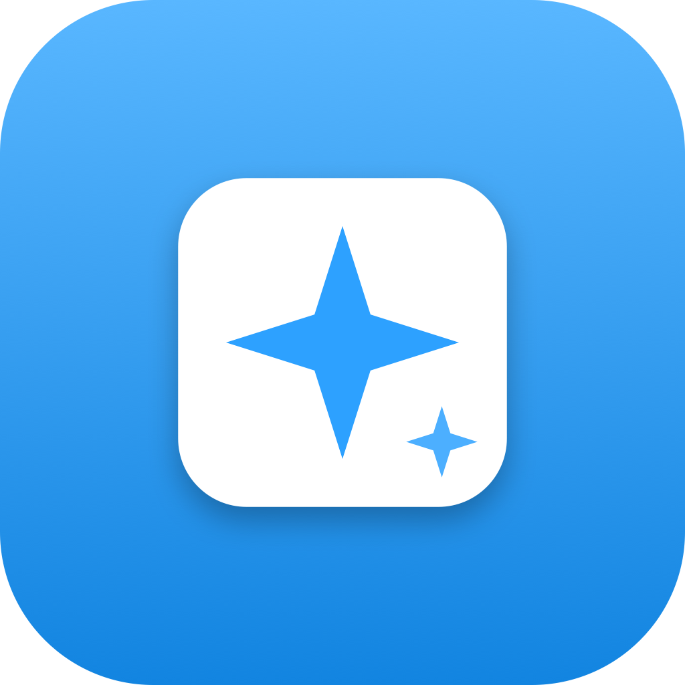

Lock your keyboard so you can actually clean it.
Wipe down your keyboard and screen without powering down or sleeping your Mac — and without opening apps, deleting files, or sending half-typed messages. Everything stays running; you pick up right where you left off.
Locks out typing, app-switching, and shortcuts so a thorough wipe-down won't trigger anything. Scrub away.
Fills the display with pure black so every smudge, fingerprint, and dust speck shows up. Then wipe it clean.
A deliberate, can't-do-it-by-accident gesture inspired by the screen-clean mode in modern cars. 3–15 seconds, your choice.
No data collection, no analytics, no account, no internet. It just locks your keyboard so you can clean it.
Same app, two ways to get it.
| Mac App Store | Direct | |
|---|---|---|
| Lock typing, shortcuts & app-switching | ✓ | ✓ |
| Pure-black screen-clean mode | ✓ | ✓ |
| Locks function & media keys too | — | ✓ |
| Automatic updates | ✓ | — |
| Setup | One click | Grant Accessibility once |
The App Store version is sandboxed by Apple, which means it can't intercept a few hardware keys (function, media, Caps Lock). The Direct version uses an accessibility permission to lock everything — best for a truly hands-off wipe-down.